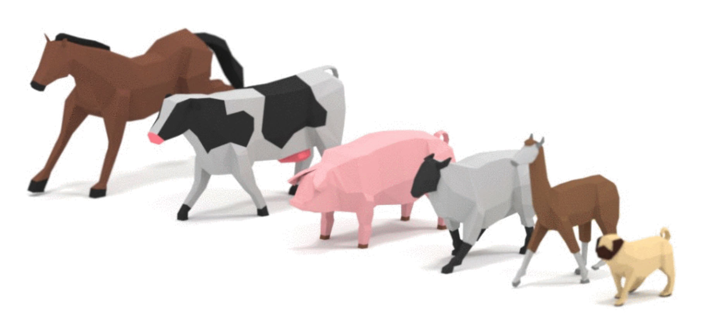

制作一个游戏
很多人想用 three.js 来写游戏。这篇文章希望能给你一些如何开始的思路。
至少在我写这篇文章的时候，它可能会成为本站最长的文章。这里的代码可能过度设计了，但在我编写每个新功能时，都会遇到需要解决的问题，而这些解决方案都来自我以前写过的其他游戏。换句话说，每个新的解决方案看起来都很重要，所以我会尽量解释为什么需要它们。当然，你的游戏越小，就越不需要这里展示的某些解决方案，但这本身是一个相当小的游戏，然而由于 3D 角色的复杂性，许多事情比 2D 角色需要更多的组织。
举个例子，如果你在制作 2D 版的吃豆人，吃豆人转弯时会瞬间完成 90 度旋转，没有中间过程。但在 3D 游戏中，我们通常需要角色在多帧之间旋转。这个简单的变化就会增加很多复杂性，并需要不同的解决方案。
这里的大部分代码实际上并不是 three.js 的代码，这一点很重要，three.js 不是一个游戏引擎。Three.js 是一个 3D 库。它提供了一个场景图以及在场景图中显示 3D 对象的功能，但它不提供制作游戏所需的所有其他东西。没有碰撞检测，没有物理引擎，没有输入系统，没有寻路等等...所以，我们必须自己提供这些功能。
我最终写了相当多的代码来制作这个简单的未完成的游戏原型，而且我觉得可能过度设计了，应该有更简单的解决方案，但我觉得我实际上还没有写够代码，希望我能解释我认为还缺少什么。
这里的许多想法深受 Unity 的影响。如果你不熟悉 Unity，那可能并不重要。我提到它只是因为有数以万计的游戏是使用这些理念发布的。
让我们从 three.js 部分开始。我们需要为游戏加载模型。
在 opengameart.org 上我找到了这个由 quaternius 制作的动画骑士模型

quaternius 还制作了这些动画动物。

这些看起来是很好的起步模型，所以我们首先需要加载它们。
我们之前讲过加载 glTF 文件。这次的不同之处在于我们需要加载多个模型，而且在所有模型加载完成之前不能开始游戏。
幸运的是 three.js 提供了 LoadingManager 来满足这个需求。我们创建一个 LoadingManager 并将它传递给其他加载器。LoadingManager 提供了 onProgress 和 onLoad 属性供我们附加回调函数。当所有文件加载完成时会调用 onLoad 回调。每个单独的文件加载完成后会调用 onProgress 回调，让我们有机会显示加载进度。
从加载 glTF 文件的代码开始，我移除了所有与场景取景相关的代码，并添加了以下代码来加载所有模型。
const manager = new THREE.LoadingManager();
manager.onLoad = init;
const models = {
pig: { url: 'resources/models/animals/Pig.gltf' },
cow: { url: 'resources/models/animals/Cow.gltf' },
llama: { url: 'resources/models/animals/Llama.gltf' },
pug: { url: 'resources/models/animals/Pug.gltf' },
sheep: { url: 'resources/models/animals/Sheep.gltf' },
zebra: { url: 'resources/models/animals/Zebra.gltf' },
horse: { url: 'resources/models/animals/Horse.gltf' },
knight: { url: 'resources/models/knight/KnightCharacter.gltf' },
};
{
const gltfLoader = new GLTFLoader(manager);
for (const model of Object.values(models)) {
gltfLoader.load(model.url, (gltf) => {
model.gltf = gltf;
});
}
}
function init() {
// 待实现
}
这段代码会加载上面所有的模型，LoadingManager 会在完成后调用 init。我们稍后会使用 models 对象来访问已加载的模型，所以每个模型的 GLTFLoader 回调会将加载的数据附加到该模型的信息上。
所有模型及其动画目前大约 6.6MB。这是一个相当大的下载量。假设你的服务器支持压缩（本站的服务器就支持），可以将它们压缩到大约 1.4MB。这肯定比 6.6MB 好，但仍然不是很小的数据量。如果我们添加一个进度条，让用户知道还需要等待多长时间，那就好了。
所以，让我们添加一个 onProgress 回调。调用时会传入 3 个参数：最后加载的对象的 url，到目前为止已加载的项目数量，以及项目总数。
让我们设置一些 HTML 来做加载条
<body> <canvas id="c"></canvas> + <div id="loading"> + <div> + <div>...loading...</div> + <div class="progress"><div id="progressbar"></div></div> + </div> + </div> </body>
我们会查找 #progressbar div，并将其宽度从 0% 设置到 100% 来显示进度。我们只需要在回调中设置它即可。
const manager = new THREE.LoadingManager();
manager.onLoad = init;
+const progressbarElem = document.querySelector('#progressbar');
+manager.onProgress = (url, itemsLoaded, itemsTotal) => {
+ progressbarElem.style.width = `${itemsLoaded / itemsTotal * 100 | 0}%`;
+};
我们已经设置了 init 在所有模型加载完成时被调用，所以我们可以通过隐藏 #loading 元素来关闭进度条。
function init() {
+ // 隐藏加载条
+ const loadingElem = document.querySelector('#loading');
+ loadingElem.style.display = 'none';
}
这是一堆用于样式化进度条的 CSS。CSS 使 #loading <div> 占满整个页面并居中其子元素。CSS 创建了一个 .progress 区域来包含进度条。CSS 还为进度条添加了对角条纹的 CSS 动画。
#loading {
position: absolute;
left: 0;
top: 0;
width: 100%;
height: 100%;
display: flex;
align-items: center;
justify-content: center;
text-align: center;
font-size: xx-large;
font-family: sans-serif;
}
#loading>div>div {
padding: 2px;
}
.progress {
width: 50vw;
border: 1px solid black;
}
#progressbar {
width: 0;
transition: width ease-out .5s;
height: 1em;
background-color: #888;
background-image: linear-gradient(
-45deg,
rgba(255, 255, 255, .5) 25%,
transparent 25%,
transparent 50%,
rgba(255, 255, 255, .5) 50%,
rgba(255, 255, 255, .5) 75%,
transparent 75%,
transparent
);
background-size: 50px 50px;
animation: progressanim 2s linear infinite;
}
@keyframes progressanim {
0% {
background-position: 50px 50px;
}
100% {
background-position: 0 0;
}
}
现在我们有了进度条，让我们来处理模型。这些模型有动画，我们希望能够访问这些动画。动画默认存储在数组中，但我们希望能够通过名称轻松访问它们，所以让我们为每个模型设置一个 animations 属性来实现这一点。当然，这意味着动画必须有唯一的名称。
+function prepModelsAndAnimations() {
+ Object.values(models).forEach(model => {
+ const animsByName = {};
+ model.gltf.animations.forEach((clip) => {
+ animsByName[clip.name] = clip;
+ });
+ model.animations = animsByName;
+ });
+}
function init() {
// 隐藏加载条
const loadingElem = document.querySelector('#loading');
loadingElem.style.display = 'none';
+ prepModelsAndAnimations();
}
让我们显示带动画的模型。
与之前加载 glTF 文件的例子不同，这次我们可能想要显示每个模型的多个实例。为此，我们不是像在加载 glTF 文章中那样直接添加加载的 gltf 场景，而是要克隆场景，特别是为蒙皮动画角色克隆场景。幸运的是有一个工具函数 SkeletonUtils.clone 可以用来做这件事。所以，首先我们需要引入这个工具。
import * as THREE from 'three';
import {OrbitControls} from 'three/addons/controls/OrbitControls.js';
import {GLTFLoader} from 'three/addons/loaders/GLTFLoader.js';
+import * as SkeletonUtils from 'three/addons/utils/SkeletonUtils.js';
然后我们可以克隆刚刚加载的模型
function init() {
// 隐藏加载条
const loadingElem = document.querySelector('#loading');
loadingElem.style.display = 'none';
prepModelsAndAnimations();
+ Object.values(models).forEach((model, ndx) => {
+ const clonedScene = SkeletonUtils.clone(model.gltf.scene);
+ const root = new THREE.Object3D();
+ root.add(clonedScene);
+ scene.add(root);
+ root.position.x = (ndx - 3) * 3;
+ });
}
上面的代码中，对于每个模型，我们克隆了加载的 gltf.scene 并将其挂载到一个新的 Object3D 上。我们需要将它挂载到另一个对象上，因为播放动画时，动画会将动画位置应用到加载场景中的节点上，这意味着我们将无法控制这些位置。
要播放动画，每个克隆的模型都需要一个 AnimationMixer。一个 AnimationMixer 包含一个或多个 AnimationAction。AnimationAction 引用一个 AnimationClip。AnimationAction 有各种播放设置，可以链接到另一个动作或在动作之间交叉淡入淡出。让我们先获取第一个 AnimationClip 并为它创建一个动作。默认情况下，动作会永远循环播放其片段。
+const mixers = [];
function init() {
// 隐藏加载条
const loadingElem = document.querySelector('#loading');
loadingElem.style.display = 'none';
prepModelsAndAnimations();
Object.values(models).forEach((model, ndx) => {
const clonedScene = SkeletonUtils.clone(model.gltf.scene);
const root = new THREE.Object3D();
root.add(clonedScene);
scene.add(root);
root.position.x = (ndx - 3) * 3;
+ const mixer = new THREE.AnimationMixer(clonedScene);
+ const firstClip = Object.values(model.animations)[0];
+ const action = mixer.clipAction(firstClip);
+ action.play();
+ mixers.push(mixer);
});
}
我们调用了 play 来启动动作，并将所有 AnimationMixer 存储在一个名为 mixers 的数组中。最后我们需要在渲染循环中更新每个 AnimationMixer，计算自上一帧以来经过的时间并将其传递给 AnimationMixer.update。
+let then = 0;
function render(now) {
+ now *= 0.001; // 转换为秒
+ const deltaTime = now - then;
+ then = now;
if (resizeRendererToDisplaySize(renderer)) {
const canvas = renderer.domElement;
camera.aspect = canvas.clientWidth / canvas.clientHeight;
camera.updateProjectionMatrix();
}
+ for (const mixer of mixers) {
+ mixer.update(deltaTime);
+ }
renderer.render(scene, camera);
requestAnimationFrame(render);
}
这样我们应该能加载每个模型并播放其第一个动画了。
让我们能够检查所有动画。我们将所有片段作为动作添加，然后一次只启用一个。
-const mixers = [];
+const mixerInfos = [];
function init() {
// 隐藏加载条
const loadingElem = document.querySelector('#loading');
loadingElem.style.display = 'none';
prepModelsAndAnimations();
Object.values(models).forEach((model, ndx) => {
const clonedScene = SkeletonUtils.clone(model.gltf.scene);
const root = new THREE.Object3D();
root.add(clonedScene);
scene.add(root);
root.position.x = (ndx - 3) * 3;
const mixer = new THREE.AnimationMixer(clonedScene);
- const firstClip = Object.values(model.animations)[0];
- const action = mixer.clipAction(firstClip);
- action.play();
- mixers.push(mixer);
+ const actions = Object.values(model.animations).map((clip) => {
+ return mixer.clipAction(clip);
+ });
+ const mixerInfo = {
+ mixer,
+ actions,
+ actionNdx: -1,
+ };
+ mixerInfos.push(mixerInfo);
+ playNextAction(mixerInfo);
});
}
+function playNextAction(mixerInfo) {
+ const {actions, actionNdx} = mixerInfo;
+ const nextActionNdx = (actionNdx + 1) % actions.length;
+ mixerInfo.actionNdx = nextActionNdx;
+ actions.forEach((action, ndx) => {
+ const enabled = ndx === nextActionNdx;
+ action.enabled = enabled;
+ if (enabled) {
+ action.play();
+ }
+ });
+}
上面的代码为每个 AnimationClip 创建了一个 AnimationAction 数组。它创建了一个 mixerInfos 对象数组，其中包含对每个模型的 AnimationMixer 和所有 AnimationAction 的引用。然后它调用 playNextAction，将除了一个动作之外的所有动作的 enabled 设为 false。
我们需要为新数组更新渲染循环
-for (const mixer of mixers) {
+for (const {mixer} of mixerInfos) {
mixer.update(deltaTime);
}
让我们实现按键 1 到 8 来播放每个模型的下一个动画
window.addEventListener('keydown', (e) => {
const mixerInfo = mixerInfos[e.keyCode - 49];
if (!mixerInfo) {
return;
}
playNextAction(mixerInfo);
});
现在你应该能点击示例，然后按 1 到 8 键来循环切换每个模型的可用动画。
这基本上就是本文 three.js 部分的全部内容了。我们讲解了加载多个文件、克隆蒙皮模型以及在它们上播放动画。在真正的游戏中，你需要对 AnimationAction 对象做更多的操作。
让我们开始构建游戏基础架构
制作现代游戏的一个常见模式是使用实体组件系统（Entity Component System）。在实体组件系统中，游戏中的对象被称为实体（entity），由一组组件（component）组成。你通过决定将哪些组件附加到实体上来构建实体。那么，让我们来构建一个实体组件系统。
我们将实体称为 GameObject。它实际上只是组件的集合和一个 three.js Object3D。
function removeArrayElement(array, element) {
const ndx = array.indexOf(element);
if (ndx >= 0) {
array.splice(ndx, 1);
}
}
class GameObject {
constructor(parent, name) {
this.name = name;
this.components = [];
this.transform = new THREE.Object3D();
parent.add(this.transform);
}
addComponent(ComponentType, ...args) {
const component = new ComponentType(this, ...args);
this.components.push(component);
return component;
}
removeComponent(component) {
removeArrayElement(this.components, component);
}
getComponent(ComponentType) {
return this.components.find(c => c instanceof ComponentType);
}
update() {
for (const component of this.components) {
component.update();
}
}
}
调用 GameObject.update 会调用所有组件的 update。
我添加 name 只是为了帮助调试，这样在调试器中查看 GameObject 时可以看到一个名称来帮助识别。
有些东西可能看起来有点奇怪：
GameObject.addComponent 用于创建组件。我不确定这是好主意还是坏主意。我的想法是，组件存在于游戏对象之外没有意义，所以我认为如果创建组件时自动将该组件添加到游戏对象并将游戏对象传递给组件的构造函数会比较好。换句话说，添加组件时你这样做
const gameObject = new GameObject(scene, 'foo'); gameObject.addComponent(TypeOfComponent);
如果我不这样做，你就需要这样写
const gameObject = new GameObject(scene, 'foo'); const component = new TypeOfComponent(gameObject); gameObject.addComponent(component);
第一种方式更短更自动化，这是更好还是更差，因为它看起来不太常规？我不知道。
GameObject.getComponent 通过类型查找组件。这意味着你不能在一个游戏对象上有两个相同类型的组件，或者至少如果你有的话，在不添加其他 API 的情况下只能查找到第一个。
一个组件查找另一个组件是很常见的，查找时必须按类型匹配，否则你可能会找到错误的组件。我们也可以给每个组件一个名称，然后按名称查找。这样会更灵活，因为你可以有多个相同类型的组件，但也会更繁琐。同样，我不确定哪种更好。
现在来看组件本身。这是它们的基类。
// 所有组件的基类
class Component {
constructor(gameObject) {
this.gameObject = gameObject;
}
update() {
}
}
组件需要基类吗？JavaScript 不像大多数严格类型语言，所以实际上我们可以没有基类，让每个组件在其构造函数中做它想做的事，知道第一个参数始终是组件的游戏对象。如果它不关心游戏对象就不存储它。但我还是觉得这个公共基类是好的。它意味着如果你有一个组件的引用，你总是可以找到它的父游戏对象，从父对象你可以轻松查找其他组件以及查看它的变换。
要管理游戏对象，我们可能需要某种游戏对象管理器。你可能认为我们可以只维护一个游戏对象数组，但在真正的游戏中，游戏对象的组件可能在运行时添加和移除其他游戏对象。例如，一个枪游戏对象可能在每次开火时添加一个子弹游戏对象。一个怪物游戏对象可能在被杀死时移除自己。这样我们就会遇到一个问题，我们可能有这样的代码
for (const gameObject of globalArrayOfGameObjects) {
gameObject.update();
}
如果在某个组件的 update 函数中在循环中途向 globalArrayOfGameObjects 添加或移除游戏对象，上面的循环就会失败或产生意外行为。
为了防止这个问题，我们需要一些更安全的东西。这是一个尝试。
class SafeArray {
constructor() {
this.array = [];
this.addQueue = [];
this.removeQueue = new Set();
}
get isEmpty() {
return this.addQueue.length + this.array.length > 0;
}
add(element) {
this.addQueue.push(element);
}
remove(element) {
this.removeQueue.add(element);
}
forEach(fn) {
this._addQueued();
this._removeQueued();
for (const element of this.array) {
if (this.removeQueue.has(element)) {
continue;
}
fn(element);
}
this._removeQueued();
}
_addQueued() {
if (this.addQueue.length) {
this.array.splice(this.array.length, 0, ...this.addQueue);
this.addQueue = [];
}
}
_removeQueued() {
if (this.removeQueue.size) {
this.array = this.array.filter(element => !this.removeQueue.has(element));
this.removeQueue.clear();
}
}
}
上面的类允许你向 SafeArray 添加或移除元素，但在遍历时不会直接修改数组本身。新元素会被添加到 addQueue，要移除的元素添加到 removeQueue，然后在循环之外进行实际的添加或移除。
使用它，这是我们管理游戏对象的类。
class GameObjectManager {
constructor() {
this.gameObjects = new SafeArray();
}
createGameObject(parent, name) {
const gameObject = new GameObject(parent, name);
this.gameObjects.add(gameObject);
return gameObject;
}
removeGameObject(gameObject) {
this.gameObjects.remove(gameObject);
}
update() {
this.gameObjects.forEach(gameObject => gameObject.update());
}
}
有了这些，现在让我们创建第一个组件。这个组件只负责管理像我们刚才创建的那种蒙皮 three.js 对象。为了简单起见，它只有一个方法 setAnimation，接受要播放的动画名称并播放它。
class SkinInstance extends Component {
constructor(gameObject, model) {
super(gameObject);
this.model = model;
this.animRoot = SkeletonUtils.clone(this.model.gltf.scene);
this.mixer = new THREE.AnimationMixer(this.animRoot);
gameObject.transform.add(this.animRoot);
this.actions = {};
}
setAnimation(animName) {
const clip = this.model.animations[animName];
// 关闭所有当前动作
for (const action of Object.values(this.actions)) {
action.enabled = false;
}
// 获取或创建该片段的动作
const action = this.mixer.clipAction(clip);
action.enabled = true;
action.reset();
action.play();
this.actions[animName] = action;
}
update() {
this.mixer.update(globals.deltaTime);
}
}
你可以看到，它基本上就是我们之前的代码，克隆加载的场景，然后设置一个 AnimationMixer。setAnimation 为特定的 AnimationClip 添加一个 AnimationAction（如果还不存在的话），并禁用所有现有的动作。
代码引用了 globals.deltaTime。让我们创建一个 globals 对象
const globals = {
time: 0,
deltaTime: 0,
};
并在渲染循环中更新它
let then = 0;
function render(now) {
// 转换为秒
globals.time = now * 0.001;
// 确保 deltaTime 不会太大
globals.deltaTime = Math.min(globals.time - then, 1 / 20);
then = globals.time;
上面确保 deltaTime 不超过 1/20 秒的检查是因为，如果我们隐藏标签页，就会得到一个巨大的 deltaTime 值。我们可能隐藏标签页几秒或几分钟，然后当标签页被切回前台时 deltaTime 会非常大，如果我们有这样的代码，可能会把角色传送到游戏世界的另一端
position += velocity * deltaTime;
通过限制 deltaTime 的最大值可以防止这个问题。
现在让我们为玩家创建一个组件。
class Player extends Component {
constructor(gameObject) {
super(gameObject);
const model = models.knight;
this.skinInstance = gameObject.addComponent(SkinInstance, model);
this.skinInstance.setAnimation('Run');
}
}
玩家用 'Run' 调用 setAnimation。为了知道有哪些可用的动画，我修改了之前的示例来打印动画名称
function prepModelsAndAnimations() {
Object.values(models).forEach(model => {
+ console.log('------->:', model.url);
const animsByName = {};
model.gltf.animations.forEach((clip) => {
animsByName[clip.name] = clip;
+ console.log(' ', clip.name);
});
model.animations = animsByName;
});
}
运行后在 JavaScript 控制台中得到了这个列表。
------->: resources/models/animals/Pig.gltf
Idle
Death
WalkSlow
Jump
Walk
------->: resources/models/animals/Cow.gltf
Walk
Jump
WalkSlow
Death
Idle
------->: resources/models/animals/Llama.gltf
Jump
Idle
Walk
Death
WalkSlow
------->: resources/models/animals/Pug.gltf
Jump
Walk
Idle
WalkSlow
Death
------->: resources/models/animals/Sheep.gltf
WalkSlow
Death
Jump
Walk
Idle
------->: resources/models/animals/Zebra.gltf
Jump
Walk
Death
WalkSlow
Idle
------->: resources/models/animals/Horse.gltf
Jump
WalkSlow
Death
Walk
Idle
------->: resources/models/knight/KnightCharacter.gltf
Run_swordRight
Run
Idle_swordLeft
Roll_sword
Idle
Run_swordAttack
幸运的是，所有动物的动画名称都是一样的，这在之后会很方便。目前我们只关心玩家有一个叫 Run 的动画。
让我们使用这些组件。这是更新后的 init 函数。它所做的就是创建一个 GameObject 并添加一个 Player 组件。
const globals = {
time: 0,
deltaTime: 0,
};
+const gameObjectManager = new GameObjectManager();
function init() {
// 隐藏加载条
const loadingElem = document.querySelector('#loading');
loadingElem.style.display = 'none';
prepModelsAndAnimations();
+ {
+ const gameObject = gameObjectManager.createGameObject(scene, 'player');
+ gameObject.addComponent(Player);
+ }
}
我们需要在渲染循环中调用 gameObjectManager.update
let then = 0;
function render(now) {
// 转换为秒
globals.time = now * 0.001;
// 确保 deltaTime 不会太大
globals.deltaTime = Math.min(globals.time - then, 1 / 20);
then = globals.time;
if (resizeRendererToDisplaySize(renderer)) {
const canvas = renderer.domElement;
camera.aspect = canvas.clientWidth / canvas.clientHeight;
camera.updateProjectionMatrix();
}
- for (const {mixer} of mixerInfos) {
- mixer.update(deltaTime);
- }
+ gameObjectManager.update();
renderer.render(scene, camera);
requestAnimationFrame(render);
}
如果我们运行它，会得到一个单独的玩家。
仅仅为了一个实体组件系统就写了这么多代码，但这是大多数游戏需要的基础设施。
让我们添加一个输入系统。与其直接读取按键，我们将创建一个类，让代码的其他部分可以检查 left 或 right。这样我们可以分配多种方式来输入 left 或 right 等。我们先从按键开始
// 保持按键/按钮的状态
//
// 你可以检查
//
// inputManager.keys.left.down
//
// 来查看左键是否当前被按住
// 你也可以检查
//
// inputManager.keys.left.justPressed
//
// 来查看左键是否在这一帧被按下
//
// 按键有 'left', 'right', 'a', 'b', 'up', 'down'
class InputManager {
constructor() {
this.keys = {};
const keyMap = new Map();
const setKey = (keyName, pressed) => {
const keyState = this.keys[keyName];
keyState.justPressed = pressed && !keyState.down;
keyState.down = pressed;
};
const addKey = (keyCode, name) => {
this.keys[name] = { down: false, justPressed: false };
keyMap.set(keyCode, name);
};
const setKeyFromKeyCode = (keyCode, pressed) => {
const keyName = keyMap.get(keyCode);
if (!keyName) {
return;
}
setKey(keyName, pressed);
};
addKey(37, 'left');
addKey(39, 'right');
addKey(38, 'up');
addKey(40, 'down');
addKey(90, 'a');
addKey(88, 'b');
window.addEventListener('keydown', (e) => {
setKeyFromKeyCode(e.keyCode, true);
});
window.addEventListener('keyup', (e) => {
setKeyFromKeyCode(e.keyCode, false);
});
}
update() {
for (const keyState of Object.values(this.keys)) {
if (keyState.justPressed) {
keyState.justPressed = false;
}
}
}
}
上面的代码跟踪按键是按下还是松开，你可以通过检查例如 inputManager.keys.left.down 来判断一个键是否当前被按下。它还为每个键提供了 justPressed 属性，这样你可以检查用户是否刚刚按下了该键。例如跳跃键，你不想知道按钮是否被持续按住，你想知道用户是否现在按下了它。
让我们创建一个 InputManager 实例
const globals = {
time: 0,
deltaTime: 0,
};
const gameObjectManager = new GameObjectManager();
+const inputManager = new InputManager();
并在渲染循环中更新它
function render(now) {
...
gameObjectManager.update();
+ inputManager.update();
...
}
它需要在 gameObjectManager.update 之后调用，否则 justPressed 在组件的 update 函数中永远不会为 true。
让我们在 Player 组件中使用它
+const kForward = new THREE.Vector3(0, 0, 1);
const globals = {
time: 0,
deltaTime: 0,
+ moveSpeed: 16,
};
class Player extends Component {
constructor(gameObject) {
super(gameObject);
const model = models.knight;
this.skinInstance = gameObject.addComponent(SkinInstance, model);
this.skinInstance.setAnimation('Run');
+ this.turnSpeed = globals.moveSpeed / 4;
}
+ update() {
+ const {deltaTime, moveSpeed} = globals;
+ const {transform} = this.gameObject;
+ const delta = (inputManager.keys.left.down ? 1 : 0) +
+ (inputManager.keys.right.down ? -1 : 0);
+ transform.rotation.y += this.turnSpeed * delta * deltaTime;
+ transform.translateOnAxis(kForward, moveSpeed * deltaTime);
+ }
}
上面的代码使用 Object3D.transformOnAxis 来向前移动玩家。Object3D.transformOnAxis 在本地空间中工作，所以只有当对象在场景的根级别时才有效，如果它是其他东西的子对象则不行 1
我们还添加了一个全局 moveSpeed，并基于移动速度计算 turnSpeed。转向速度基于移动速度，以确保角色能够足够快地转向以到达目标。如果 turnSpeed 太小，角色会围绕目标转圈但永远无法到达。我没有费心去计算给定移动速度所需的转向速度，只是猜的。
到目前为止的代码可以工作，但如果玩家跑出屏幕就无法知道他们在哪里了。让我们实现如果他们离开屏幕超过一定时间就传送回原点。我们可以使用 three.js 的 Frustum 类来检查一个点是否在摄像机的视锥体内。
我们需要从摄像机构建一个视锥体。我们可以在 Player 组件中做这件事，但其他对象可能也想使用它，所以让我们添加另一个带有管理视锥体组件的游戏对象。
class CameraInfo extends Component {
constructor(gameObject) {
super(gameObject);
this.projScreenMatrix = new THREE.Matrix4();
this.frustum = new THREE.Frustum();
}
update() {
const {camera} = globals;
this.projScreenMatrix.multiplyMatrices(
camera.projectionMatrix,
camera.matrixWorldInverse);
this.frustum.setFromProjectionMatrix(this.projScreenMatrix);
}
}
然后让我们在初始化时设置另一个游戏对象。
function init() {
// 隐藏加载条
const loadingElem = document.querySelector('#loading');
loadingElem.style.display = 'none';
prepModelsAndAnimations();
+ {
+ const gameObject = gameObjectManager.createGameObject(camera, 'camera');
+ globals.cameraInfo = gameObject.addComponent(CameraInfo);
+ }
{
const gameObject = gameObjectManager.createGameObject(scene, 'player');
gameObject.addComponent(Player);
}
}
现在我们可以在 Player 组件中使用它了。
class Player extends Component {
constructor(gameObject) {
super(gameObject);
const model = models.knight;
this.skinInstance = gameObject.addComponent(SkinInstance, model);
this.skinInstance.setAnimation('Run');
this.turnSpeed = globals.moveSpeed / 4;
+ this.offscreenTimer = 0;
+ this.maxTimeOffScreen = 3;
}
update() {
- const {deltaTime, moveSpeed} = globals;
+ const {deltaTime, moveSpeed, cameraInfo} = globals;
const {transform} = this.gameObject;
const delta = (inputManager.keys.left.down ? 1 : 0) +
(inputManager.keys.right.down ? -1 : 0);
transform.rotation.y += this.turnSpeed * delta * deltaTime;
transform.translateOnAxis(kForward, moveSpeed * deltaTime);
+ const {frustum} = cameraInfo;
+ if (frustum.containsPoint(transform.position)) {
+ this.offscreenTimer = 0;
+ } else {
+ this.offscreenTimer += deltaTime;
+ if (this.offscreenTimer >= this.maxTimeOffScreen) {
+ transform.position.set(0, 0, 0);
+ }
+ }
}
}
在试运行之前还有一件事，让我们为移动端添加触摸屏支持。首先添加一些 HTML 用于触摸
<body>
<canvas id="c"></canvas>
+ <div id="ui">
+ <div id="left"><img src="../resources/images/left.svg"></div>
+ <div style="flex: 0 0 40px;"></div>
+ <div id="right"><img src="../resources/images/right.svg"></div>
+ </div>
<div id="loading">
<div>
<div>...loading...</div>
<div class="progress"><div id="progressbar"></div></div>
</div>
</div>
</body>
以及一些 CSS 来样式化它
#ui {
position: absolute;
left: 0;
top: 0;
width: 100%;
height: 100%;
display: flex;
justify-items: center;
align-content: stretch;
}
#ui>div {
display: flex;
align-items: flex-end;
flex: 1 1 auto;
}
.bright {
filter: brightness(2);
}
#left {
justify-content: flex-end;
}
#right {
justify-content: flex-start;
}
#ui img {
padding: 10px;
width: 80px;
height: 80px;
display: block;
}
这里的想法是有一个 #ui div 覆盖整个页面。里面有两个 div，#left 和 #right，它们都几乎是页面宽度的一半，高度为整个屏幕。中间有一个 40px 的分隔。如果用户在左侧或右侧滑动手指，我们需要更新 InputManager 中的 keys.left 和 keys.right。这使整个屏幕都对触摸敏感，这比仅使用小箭头要好。
class InputManager {
constructor() {
this.keys = {};
const keyMap = new Map();
const setKey = (keyName, pressed) => {
const keyState = this.keys[keyName];
keyState.justPressed = pressed && !keyState.down;
keyState.down = pressed;
};
const addKey = (keyCode, name) => {
this.keys[name] = { down: false, justPressed: false };
keyMap.set(keyCode, name);
};
const setKeyFromKeyCode = (keyCode, pressed) => {
const keyName = keyMap.get(keyCode);
if (!keyName) {
return;
}
setKey(keyName, pressed);
};
addKey(37, 'left');
addKey(39, 'right');
addKey(38, 'up');
addKey(40, 'down');
addKey(90, 'a');
addKey(88, 'b');
window.addEventListener('keydown', (e) => {
setKeyFromKeyCode(e.keyCode, true);
});
window.addEventListener('keyup', (e) => {
setKeyFromKeyCode(e.keyCode, false);
});
+ const sides = [
+ { elem: document.querySelector('#left'), key: 'left' },
+ { elem: document.querySelector('#right'), key: 'right' },
+ ];
+
+ const clearKeys = () => {
+ for (const {key} of sides) {
+ setKey(key, false);
+ }
+ };
+
+ const handleMouseMove = (e) => {
+ e.preventDefault();
+ // 这是必要的，因为我们调用了 preventDefault()；
+ // 我们还给 canvas 添加了 tabindex 以便它可以
+ // 获得焦点
+ canvas.focus();
+ window.addEventListener('pointermove', handleMouseMove);
+ window.addEventListener('pointerup', handleMouseUp);
+
+ for (const {elem, key} of sides) {
+ let pressed = false;
+ const rect = elem.getBoundingClientRect();
+ const x = e.clientX;
+ const y = e.clientY;
+ const inRect = x >= rect.left && x < rect.right &&
+ y >= rect.top && y < rect.bottom;
+ if (inRect) {
+ pressed = true;
+ }
+ setKey(key, pressed);
+ }
+ };
+
+ function handleMouseUp() {
+ clearKeys();
+ window.removeEventListener('pointermove', handleMouseMove, {passive: false});
+ window.removeEventListener('pointerup', handleMouseUp);
+ }
+
+ const uiElem = document.querySelector('#ui');
+ uiElem.addEventListener('pointerdown', handleMouseMove, {passive: false});
+
+ uiElem.addEventListener('touchstart', (e) => {
+ // 阻止滚动
+ e.preventDefault();
+ }, {passive: false});
}
update() {
for (const keyState of Object.values(this.keys)) {
if (keyState.justPressed) {
keyState.justPressed = false;
}
}
}
}
现在我们应该能用左右方向键或在触摸屏上用手指来控制角色了
理想情况下，如果玩家离开屏幕我们会做其他事情，比如移动摄像机或者离开屏幕就死亡，但这篇文章已经够长了，所以目前传送回中心是最简单的方案。
让我们添加一些动物。我们可以像 Player 类似地开始，创建一个 Animal 组件。
class Animal extends Component {
constructor(gameObject, model) {
super(gameObject);
const skinInstance = gameObject.addComponent(SkinInstance, model);
skinInstance.mixer.timeScale = globals.moveSpeed / 4;
skinInstance.setAnimation('Idle');
}
}
上面的代码设置 AnimationMixer.timeScale 来设置动画相对于移动速度的播放速度。这样如果我们调整移动速度，动画也会相应加速或减速。
首先我们可以设置每种动物各一个
function init() {
// 隐藏加载条
const loadingElem = document.querySelector('#loading');
loadingElem.style.display = 'none';
prepModelsAndAnimations();
{
const gameObject = gameObjectManager.createGameObject(camera, 'camera');
globals.cameraInfo = gameObject.addComponent(CameraInfo);
}
{
const gameObject = gameObjectManager.createGameObject(scene, 'player');
globals.player = gameObject.addComponent(Player);
globals.congaLine = [gameObject];
}
+ const animalModelNames = [
+ 'pig',
+ 'cow',
+ 'llama',
+ 'pug',
+ 'sheep',
+ 'zebra',
+ 'horse',
+ ];
+ animalModelNames.forEach((name, ndx) => {
+ const gameObject = gameObjectManager.createGameObject(scene, name);
+ gameObject.addComponent(Animal, models[name]);
+ gameObject.transform.position.x = (ndx + 1) * 5;
+ });
}
这样我们会得到站在屏幕上的动物，但我们希望它们做些什么。
让我们让它们在玩家靠近时跟随玩家排成康加舞队列。为此我们需要几种状态。
空闲（Idle）：
动物等待玩家靠近
等待队尾（Wait for End of Line）：
动物被玩家标记了，但现在需要等待队列末尾的动物过来，这样它才能加入队尾。
走向队尾（Go to Last）：
动物需要走到它跟随的动物之前所在的位置，同时记录它跟随的动物当前的位置历史。
跟随（Follow）
动物需要持续记录它跟随的动物的位置历史，同时移动到它跟随的动物之前所在的位置。
处理这样的不同状态有很多方式。一种常见的方式是使用有限状态机（Finite State Machine），并构建一些类来帮助我们管理状态。
那么，让我们来实现它。
class FiniteStateMachine {
constructor(states, initialState) {
this.states = states;
this.transition(initialState);
}
get state() {
return this.currentState;
}
transition(state) {
const oldState = this.states[this.currentState];
if (oldState && oldState.exit) {
oldState.exit.call(this);
}
this.currentState = state;
const newState = this.states[state];
if (newState.enter) {
newState.enter.call(this);
}
}
update() {
const state = this.states[this.currentState];
if (state.update) {
state.update.call(this);
}
}
}
这是一个简单的类。我们传给它一个包含一堆状态的对象。每个状态有 3 个可选函数：enter、update 和 exit。要切换状态，我们调用 FiniteStateMachine.transition 并传入新状态的名称。如果当前状态有 exit 函数就会被调用。然后如果新状态有 enter 函数也会被调用。最后每一帧 FiniteStateMachine.update 会调用当前状态的 update 函数。
让我们用它来管理动物的状态。
// 如果 obj1 和 obj2 足够近则返回 true
function isClose(obj1, obj1Radius, obj2, obj2Radius) {
const minDist = obj1Radius + obj2Radius;
const dist = obj1.position.distanceTo(obj2.position);
return dist < minDist;
}
// 将 v 限制在 -min 和 +min 之间
function minMagnitude(v, min) {
return Math.abs(v) > min
? min * Math.sign(v)
: v;
}
const aimTowardAndGetDistance = function() {
const delta = new THREE.Vector3();
return function aimTowardAndGetDistance(source, targetPos, maxTurn) {
delta.subVectors(targetPos, source.position);
// 计算我们想要面朝的方向
const targetRot = Math.atan2(delta.x, delta.z) + Math.PI * 1.5;
// 沿最短方向旋转
const deltaRot = (targetRot - source.rotation.y + Math.PI * 1.5) % (Math.PI * 2) - Math.PI;
// 确保转向速度不超过 maxTurn
const deltaRotation = minMagnitude(deltaRot, maxTurn);
// 将旋转保持在 0 到 Math.PI * 2 之间
source.rotation.y = THREE.MathUtils.euclideanModulo(
source.rotation.y + deltaRotation, Math.PI * 2);
// 返回到目标的距离
return delta.length();
};
}();
class Animal extends Component {
constructor(gameObject, model) {
super(gameObject);
+ const hitRadius = model.size / 2;
const skinInstance = gameObject.addComponent(SkinInstance, model);
skinInstance.mixer.timeScale = globals.moveSpeed / 4;
+ const transform = gameObject.transform;
+ const playerTransform = globals.player.gameObject.transform;
+ const maxTurnSpeed = Math.PI * (globals.moveSpeed / 4);
+ const targetHistory = [];
+ let targetNdx = 0;
+
+ function addHistory() {
+ const targetGO = globals.congaLine[targetNdx];
+ const newTargetPos = new THREE.Vector3();
+ newTargetPos.copy(targetGO.transform.position);
+ targetHistory.push(newTargetPos);
+ }
+
+ this.fsm = new FiniteStateMachine({
+ idle: {
+ enter: () => {
+ skinInstance.setAnimation('Idle');
+ },
+ update: () => {
+ // 检查玩家是否靠近
+ if (isClose(transform, hitRadius, playerTransform, globals.playerRadius)) {
+ this.fsm.transition('waitForEnd');
+ }
+ },
+ },
+ waitForEnd: {
+ enter: () => {
+ skinInstance.setAnimation('Jump');
+ },
+ update: () => {
+ // 获取康加舞队列末尾的游戏对象
+ const lastGO = globals.congaLine[globals.congaLine.length - 1];
+ const deltaTurnSpeed = maxTurnSpeed * globals.deltaTime;
+ const targetPos = lastGO.transform.position;
+ aimTowardAndGetDistance(transform, targetPos, deltaTurnSpeed);
+ // 检查康加舞队列的最后一个是否靠近
+ if (isClose(transform, hitRadius, lastGO.transform, globals.playerRadius)) {
+ this.fsm.transition('goToLast');
+ }
+ },
+ },
+ goToLast: {
+ enter: () => {
+ // 记住我们跟随的是谁
+ targetNdx = globals.congaLine.length - 1;
+ // 将自己加入康加舞队列
+ globals.congaLine.push(gameObject);
+ skinInstance.setAnimation('Walk');
+ },
+ update: () => {
+ addHistory();
+ // 走向历史记录中最旧的点
+ const targetPos = targetHistory[0];
+ const maxVelocity = globals.moveSpeed * globals.deltaTime;
+ const deltaTurnSpeed = maxTurnSpeed * globals.deltaTime;
+ const distance = aimTowardAndGetDistance(transform, targetPos, deltaTurnSpeed);
+ const velocity = distance;
+ transform.translateOnAxis(kForward, Math.min(velocity, maxVelocity));
+ if (distance <= maxVelocity) {
+ this.fsm.transition('follow');
+ }
+ },
+ },
+ follow: {
+ update: () => {
+ addHistory();
+ // 移除最旧的历史记录并将自己放到那个位置
+ const targetPos = targetHistory.shift();
+ transform.position.copy(targetPos);
+ const deltaTurnSpeed = maxTurnSpeed * globals.deltaTime;
+ aimTowardAndGetDistance(transform, targetHistory[0], deltaTurnSpeed);
+ },
+ },
+ }, 'idle');
+ }
+ update() {
+ this.fsm.update();
+ }
}
这是一大段代码，但它实现了上面描述的功能。希望你逐步浏览每个状态时会觉得很清晰。
我们还需要添加一些东西。我们需要让玩家将自己添加到 globals 中，以便动物可以找到它，并且我们需要用玩家的 GameObject 来开始康加舞队列。
function init() {
...
{
const gameObject = gameObjectManager.createGameObject(scene, 'player');
+ globals.player = gameObject.addComponent(Player);
+ globals.congaLine = [gameObject];
}
}
我们还需要计算每个模型的大小
function prepModelsAndAnimations() {
+ const box = new THREE.Box3();
+ const size = new THREE.Vector3();
Object.values(models).forEach(model => {
+ box.setFromObject(model.gltf.scene);
+ box.getSize(size);
+ model.size = size.length();
const animsByName = {};
model.gltf.animations.forEach((clip) => {
animsByName[clip.name] = clip;
// 这个应该在 .blend 文件中修复
if (clip.name === 'Walk') {
clip.duration /= 2;
}
});
model.animations = animsByName;
});
}
我们还需要让玩家记录自己的大小
class Player extends Component {
constructor(gameObject) {
super(gameObject);
const model = models.knight;
+ globals.playerRadius = model.size / 2;
现在想想，让动物瞄准康加舞队列的头部而不是特定的玩家可能会更聪明。也许我以后会回来改。
刚开始时我对所有动物只用一个半径，但这当然不好，因为哈巴狗比马小得多。所以我添加了不同的大小，但我想要能够可视化这些东西。为此我创建了一个 StateDisplayHelper 组件。
它使用 PolarGridHelper 在每个角色周围画一个圆圈，并使用 HTML 元素让每个角色显示一些状态，使用的是将 HTML 元素对齐到 3D 的文章中介绍的技术。
首先我们需要添加一些 HTML 来承载这些元素
<body>
<canvas id="c"></canvas>
<div id="ui">
<div id="left"><img src="../resources/images/left.svg"></div>
<div style="flex: 0 0 40px;"></div>
<div id="right"><img src="../resources/images/right.svg"></div>
</div>
<div id="loading">
<div>
<div>...loading...</div>
<div class="progress"><div id="progressbar"></div></div>
</div>
</div>
+ <div id="labels"></div>
</body>
并添加一些 CSS
#labels {
position: absolute; /* 让我们可以在容器内定位自己 */
left: 0; /* 将位置设为容器的左上角 */
top: 0;
color: white;
width: 100%;
height: 100%;
overflow: hidden;
pointer-events: none;
}
#labels>div {
position: absolute; /* 让我们可以在容器内定位它们 */
left: 0; /* 将它们的默认位置设为容器的左上角 */
top: 0;
font-size: large;
font-family: monospace;
user-select: none; /* 禁止文本被选中 */
text-shadow: /* 创建黑色描边 */
-1px -1px 0 #000,
0 -1px 0 #000,
1px -1px 0 #000,
1px 0 0 #000,
1px 1px 0 #000,
0 1px 0 #000,
-1px 1px 0 #000,
-1px 0 0 #000;
}
然后这是组件
const labelContainerElem = document.querySelector('#labels');
class StateDisplayHelper extends Component {
constructor(gameObject, size) {
super(gameObject);
this.elem = document.createElement('div');
labelContainerElem.appendChild(this.elem);
this.pos = new THREE.Vector3();
this.helper = new THREE.PolarGridHelper(size / 2, 1, 1, 16);
gameObject.transform.add(this.helper);
}
setState(s) {
this.elem.textContent = s;
}
setColor(cssColor) {
this.elem.style.color = cssColor;
this.helper.material.color.set(cssColor);
}
update() {
const {pos} = this;
const {transform} = this.gameObject;
const {canvas} = globals;
pos.copy(transform.position);
// 获取该位置的归一化屏幕坐标
// x 和 y 的范围在 -1 到 +1 之间，x = -1 在左边
// y = -1 在底部
pos.project(globals.camera);
// 将归一化位置转换为 CSS 坐标
const x = (pos.x * .5 + .5) * canvas.clientWidth;
const y = (pos.y * -.5 + .5) * canvas.clientHeight;
// 将元素移动到该位置
this.elem.style.transform = `translate(-50%, -50%) translate(${x}px,${y}px)`;
}
}
然后我们可以这样将它们添加到动物上
class Animal extends Component {
constructor(gameObject, model) {
super(gameObject);
+ this.helper = gameObject.addComponent(StateDisplayHelper, model.size);
...
}
update() {
this.fsm.update();
+ const dir = THREE.MathUtils.radToDeg(this.gameObject.transform.rotation.y);
+ this.helper.setState(`${this.fsm.state}:${dir.toFixed(0)}`);
}
}
趁此机会让我们也实现用 lil-gui 来开关它们，就像我们在其他地方使用的那样
import * as THREE from 'three';
import {OrbitControls} from 'three/addons/controls/OrbitControls.js';
import {GLTFLoader} from 'three/addons/loaders/GLTFLoader.js';
import * as SkeletonUtils from 'three/addons/utils/SkeletonUtils.js';
+import {GUI} from 'three/addons/libs/lil-gui.module.min.js';
+const gui = new GUI();
+gui.add(globals, 'debug').onChange(showHideDebugInfo);
+showHideDebugInfo();
const labelContainerElem = document.querySelector('#labels');
+function showHideDebugInfo() {
+ labelContainerElem.style.display = globals.debug ? '' : 'none';
+}
+showHideDebugInfo();
class StateDisplayHelper extends Component {
...
update() {
+ this.helper.visible = globals.debug;
+ if (!globals.debug) {
+ return;
+ }
...
}
}
这样我们就有了一个游戏的雏形
最初我打算做一个贪吃蛇游戏，随着你将动物添加到队列中，游戏会变得更难，因为你需要避免撞到它们。我还会在场景中放置一些障碍物，也许还有围栏或围绕周边的某种屏障。
不幸的是，这些动物又长又细。从上面看，这是斑马。

目前的代码使用圆形碰撞，这意味着如果我们有像围栏这样的障碍物，那么这将被视为碰撞

这不行。即使是动物与动物之间也会有同样的问题。
我考虑过写一个 2D 矩形对矩形的碰撞系统，但很快意识到这可能需要很多代码。检查两个任意方向的矩形是否重叠本身代码量不大，对于只有少量对象的游戏可能够用，但当对象多了之后你很快就需要优化碰撞检测。首先你可能需要遍历所有可能相互碰撞的对象，检查它们的包围球、包围圆或轴对齐包围盒。一旦你知道哪些对象可能碰撞，你还需要做更多工作来检查它们是否实际碰撞了。通常即使检查包围球也太费劲，你需要某种更好的空间结构来更快地只检查可能彼此靠近的对象。
然后，一旦你写了检查两个对象是否碰撞的代码，你通常想要做一个碰撞系统，而不是手动询问"我是否与这些对象碰撞"。碰撞系统会发出事件或调用与碰撞相关的回调。优势在于它可以一次检查所有碰撞，这样没有对象会被检查多次，而如果你手动调用某个"我是否碰撞"的函数，对象往往会被多次检查，浪费时间。
制作这样的碰撞系统可能只需要 100-300 行代码来检查任意方向的矩形，但这仍然是很多额外的代码，所以最好先不做。
另一个解决方案是尝试找一些从顶部看大致是圆形的其他角色。例如其他人形角色而不是动物，这样圆形检测可能适用于动物之间的碰撞。但对于动物与围栏之间则不行，我们必须添加圆形对矩形的检测。我考虑过把围栏做成灌木丛或柱子，圆形的东西，但那样我可能需要 120 到 200 个来围绕游戏区域，这就会遇到上面提到的优化问题。
这就是为什么很多游戏使用现有的解决方案。这些解决方案通常是物理库的一部分。物理库需要知道对象是否相互碰撞，所以在提供物理效果的基础上还可以用来检测碰撞。
如果你在寻找解决方案，一些 three.js 示例使用了 ammo.js，这可能是一个选择。
另一个解决方案可能是将障碍物放在网格上，让每个动物和玩家只需要查看网格。虽然这样性能会很好，但我觉得这最好留作读者的练习 😜
还有一件事，很多游戏系统有一种叫做协程（coroutines）的东西。协程是可以在运行时暂停并在之后继续的例程。
让我们让主角发出音符，就像它在通过唱歌带领队伍一样。我们有很多方式可以实现这个，但现在让我们用协程来做。
首先，这是一个管理协程的类
function* waitSeconds(duration) {
while (duration > 0) {
duration -= globals.deltaTime;
yield;
}
}
class CoroutineRunner {
constructor() {
this.generatorStacks = [];
this.addQueue = [];
this.removeQueue = new Set();
}
isBusy() {
return this.addQueue.length + this.generatorStacks.length > 0;
}
add(generator, delay = 0) {
const genStack = [generator];
if (delay) {
genStack.push(waitSeconds(delay));
}
this.addQueue.push(genStack);
}
remove(generator) {
this.removeQueue.add(generator);
}
update() {
this._addQueued();
this._removeQueued();
for (const genStack of this.generatorStacks) {
const main = genStack[0];
// 处理一个协程移除另一个协程的情况
if (this.removeQueue.has(main)) {
continue;
}
while (genStack.length) {
const topGen = genStack[genStack.length - 1];
const {value, done} = topGen.next();
if (done) {
if (genStack.length === 1) {
this.removeQueue.add(topGen);
break;
}
genStack.pop();
} else if (value) {
genStack.push(value);
} else {
break;
}
}
}
this._removeQueued();
}
_addQueued() {
if (this.addQueue.length) {
this.generatorStacks.splice(this.generatorStacks.length, 0, ...this.addQueue);
this.addQueue = [];
}
}
_removeQueued() {
if (this.removeQueue.size) {
this.generatorStacks = this.generatorStacks.filter(genStack => !this.removeQueue.has(genStack[0]));
this.removeQueue.clear();
}
}
}
它和 SafeArray 做了类似的事情，确保在其他协程运行时添加或移除协程是安全的。它还处理嵌套协程。
要创建协程，你需要创建一个 JavaScript 生成器函数。生成器函数前面有关键字 function*（星号很重要！）
生成器函数可以 yield。例如
function* count0To9() {
for (let i = 0; i < 10; ++i) {
console.log(i);
yield;
}
}
如果我们将这个函数添加到上面的 CoroutineRunner 中，它会每帧打印一个数字（0 到 9），或者更准确地说是每次调用 runner.update 时打印一个。
const runner = new CoroutineRunner();
runner.add(count0To9);
while(runner.isBusy()) {
runner.update();
}
协程在完成时会自动被移除。要提前移除一个协程，在它结束之前你需要保持对其生成器的引用，像这样
const gen = count0To9(); runner.add(gen); // 稍后某个时候 runner.remove(gen);
无论如何，在玩家中让我们使用协程每隔 0.5 到 1 秒发出一个音符
class Player extends Component {
constructor(gameObject) {
...
+ this.runner = new CoroutineRunner();
+
+ function* emitNotes() {
+ for (;;) {
+ yield waitSeconds(rand(0.5, 1));
+ const noteGO = gameObjectManager.createGameObject(scene, 'note');
+ noteGO.transform.position.copy(gameObject.transform.position);
+ noteGO.transform.position.y += 5;
+ noteGO.addComponent(Note);
+ }
+ }
+
+ this.runner.add(emitNotes());
}
update() {
+ this.runner.update();
...
}
}
function rand(min, max) {
if (max === undefined) {
max = min;
min = 0;
}
return Math.random() * (max - min) + min;
}
你可以看到我们创建了一个 CoroutineRunner 并添加了一个 emitNotes 协程。这个函数会永远运行，等待 0.5 到 1 秒然后创建一个带有 Note 组件的游戏对象。
对于 Note 组件，首先让我们制作一个带有音符的纹理，我们不加载音符图片，而是像画布纹理文章中介绍的那样使用画布来制作。
function makeTextTexture(str) {
const ctx = document.createElement('canvas').getContext('2d');
ctx.canvas.width = 64;
ctx.canvas.height = 64;
ctx.font = '60px sans-serif';
ctx.textAlign = 'center';
ctx.textBaseline = 'middle';
ctx.fillStyle = '#FFF';
ctx.fillText(str, ctx.canvas.width / 2, ctx.canvas.height / 2);
return new THREE.CanvasTexture(ctx.canvas);
}
const noteTexture = makeTextTexture('♪');
我们创建的纹理是白色的，这意味着使用时我们可以设置材质的颜色来获得任意颜色的音符。
现在我们有了 noteTexture，这是 Note 组件。它使用了 SpriteMaterial 和 Sprite，就像我们在广告牌文章中介绍的那样
class Note extends Component {
constructor(gameObject) {
super(gameObject);
const {transform} = gameObject;
const noteMaterial = new THREE.SpriteMaterial({
color: new THREE.Color().setHSL(rand(1), 1, 0.5),
map: noteTexture,
side: THREE.DoubleSide,
transparent: true,
});
const note = new THREE.Sprite(noteMaterial);
note.scale.setScalar(3);
transform.add(note);
this.runner = new CoroutineRunner();
const direction = new THREE.Vector3(rand(-0.2, 0.2), 1, rand(-0.2, 0.2));
function* moveAndRemove() {
for (let i = 0; i < 60; ++i) {
transform.translateOnAxis(direction, globals.deltaTime * 10);
noteMaterial.opacity = 1 - (i / 60);
yield;
}
transform.parent.remove(transform);
gameObjectManager.removeGameObject(gameObject);
}
this.runner.add(moveAndRemove());
}
update() {
this.runner.update();
}
}
它所做的就是设置一个 Sprite，然后选择一个随机速度，以该速度移动变换 60 帧，同时通过设置材质的 opacity 使音符淡出。循环结束后，它将变换从场景中移除，并将音符本身从活动游戏对象中移除。
最后一件事，让我们添加更多动物
function init() {
...
const animalModelNames = [
'pig',
'cow',
'llama',
'pug',
'sheep',
'zebra',
'horse',
];
+ const base = new THREE.Object3D();
+ const offset = new THREE.Object3D();
+ base.add(offset);
+
+ // 将动物排列成螺旋形
+ const numAnimals = 28;
+ const arc = 10;
+ const b = 10 / (2 * Math.PI);
+ let r = 10;
+ let phi = r / b;
+ for (let i = 0; i < numAnimals; ++i) {
+ const name = animalModelNames[rand(animalModelNames.length) | 0];
const gameObject = gameObjectManager.createGameObject(scene, name);
gameObject.addComponent(Animal, models[name]);
+ base.rotation.y = phi;
+ offset.position.x = r;
+ offset.updateWorldMatrix(true, false);
+ offset.getWorldPosition(gameObject.transform.position);
+ phi += arc / r;
+ r = b * phi;
}
你可能会问，为什么不用 setTimeout？setTimeout 的问题是它与游戏时钟无关。例如上面我们将帧之间允许的最大时间设为 1/20 秒。我们的协程系统会遵守这个限制，但 setTimeout 不会。
当然我们可以自己做一个简单的计时器
class Player ... {
update() {
this.noteTimer -= globals.deltaTime;
if (this.noteTimer <= 0) {
// 重置计时器
this.noteTimer = rand(0.5, 1);
// 创建一个带有音符组件的游戏对象
}
}
对于这个特定情况这可能更好，但随着你添加越来越多的东西，你的类中会添加越来越多的变量，而使用协程你通常可以触发后就不用管了。
鉴于我们动物的简单状态，我们也可以用以下形式的协程来实现它们
// 伪代码！
function* animalCoroutine() {
setAnimation('Idle');
while(playerIsTooFar()) {
yield;
}
const target = endOfLine;
setAnimation('Jump');
while(targetIsTooFar()) {
aimAt(target);
yield;
}
setAnimation('Walk')
while(notAtOldestPositionOfTarget()) {
addHistory();
aimAt(target);
yield;
}
for(;;) {
addHistory();
const pos = history.unshift();
transform.position.copy(pos);
aimAt(history[0]);
yield;
}
}
这样做是可行的，但当然一旦我们的状态不再是线性的，我们就不得不切换到 FiniteStateMachine。
我也不确定协程是否应该独立于它们的组件运行。我们可以创建一个全局的 CoroutineRunner 并将所有协程放在上面。但这会使清理变得更难。目前如果游戏对象被移除，它的所有组件都会被移除，因此创建的协程运行器不再被调用，一切都会被垃圾回收。如果我们有一个全局运行器，那么每个组件都有责任移除它添加的任何协程，否则需要某种其他机制将协程注册到特定组件或游戏对象，以便移除一个时也移除其他的。
一个正常的游戏引擎会处理更多问题。目前游戏对象或其组件的运行没有顺序。它们只是按添加顺序运行。许多游戏系统会添加优先级，以便可以设置或更改顺序。
我们遇到的另一个问题是 Note 从场景中移除其游戏对象的变换。这似乎应该在 GameObject 中发生，因为最初是 GameObject 添加的变换。也许 GameObject 应该有一个 dispose 方法，由 GameObjectManager.removeGameObject 调用？
还有一个问题是我们手动调用 gameObjectManager.update 和 inputManager.update。也许应该有一个 SystemManager，这些全局服务可以将自己添加进去，每个服务的 update 函数都会被调用。这样如果我们添加了像 CollisionManager 这样的新服务，我们只需要将它添加到系统管理器中，而不必编辑渲染循环。
我会把这些问题留给你。希望这篇文章给了你一些关于制作自己游戏引擎的思路。
也许我应该搞一个 Game Jam。如果你点击最后一个示例上方的 jsfiddle 或 codepen 按钮，它们会在这些网站上打开，准备好编辑。添加一些功能，把游戏改成一只哈巴狗带领一群骑士。用骑士的翻滚动画做保龄球，制作一个动物保龄球游戏。制作一个动物接力赛。如果你做出了很酷的游戏，请在下面的评论中发布链接。